Polymers
Do you think that daily life would have been easier and colourful without the discovery and varied applications
of polymers? The use of polymers in the manufacture of plastic buckets, cups and saucers, children’s toys,
packaging bags, synthetic clothing materials, automobile tyres, gears and seals, electrical insulating materials and
machine parts has completely revolutionised the daily life as well as the industrial scenario. Indeed, the
polymers are the backbone of four major industries viz.plastics, elastomers, fibres and paints and varnishes.
The word ‘polymer’ is coined from two Greek words:poly means many and mer means unit or part. The
term polymer is defined as very large molecules having high molecular mass (103-107u). These are also referred
to as macromolecules, which are formed by joining of repeating structural units on a large scale. The repeating
structural units are derived from some simple and reactive molecules known as monomers and are linked
to each other by covalent bonds. The process of formation of polymers from respective monomers is
called polymerisation.
Classification of Polymers:
There are several ways of classification of polymers based
on some special considerations. One of the common
classifications of polymers is based on source from which
polymer is derived.Under this type of classification, there are three sub categories.
1. Natural polymers: These polymers are found in plants and animals. Examples are proteins, cellulose, starch, some resins and rubber.
2. Semi-synthetic polymers: Cellulose derivatives as cellulose acetate (rayon) and cellulose nitrate, etc. are the usual examples of this sub category.
3. Synthetic polymers: A variety of synthetic polymers as plastic (polythene), synthetic fibres (nylon 6,6) and synthetic rubbers (Buna - S) are examples of man-made polymers extensively used in daily life as well as in industry.
Polymers can also be classified on the basis of their structure, molecular forces or modes of polymerisation.
Types of Polymerisation reactions: There are two broad types of polymerisation reactions, i.e., the addition or chain growth polymerisation and condensation or step growth polymerisation.
Addition Polymerisation or Chain Growth Polymerisation: In this type of polymerisation, the molecules of the same monomer or diferent monomers add together on a large scale to form a polymer. The monomers used are unsaturated compounds, e.g., alkenes, alkadienes and their derivatives. This mode of polymerisation leads to an increase in chain length and chain growth can take place through the formation of either free radicals or ionic species. However, the free radical governed addition or chain growth polymerisation is the most common mode.
Mechanism of Addition Polymerisation:
1. Free radical mechanism: A variety of alkenes or dienes and their derivatives are polymerised in the presence of a free radical generating initiator (catalyst) like benzoyl peroxide, acetyl peroxide, tert-butyl peroxide, etc. For example, the polymerisation of ethene to polythene consists of heating or exposing to light a mixture of ethene with a small amount of benzoyl peroxide initiator. The process starts with the addition of phenyl free radical formed by the peroxide to the ethene double bond thus generating a new and larger free radical. This step is called chain initiating step. As this radical reacts with another molecule of ethene, another bigger sized radical is formed. The repetition of this sequence with new and bigger radicals carries the reaction forward and the step is termed as chain propagating step. Ultimately, at some stage the product radical thus formed reacts with another radical to form the polymerised product. This step is called the chain terminating step. The sequence of steps involved in the formation of polythene are depicted as follows:
Chain initiation steps
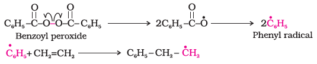
Chain propagating step
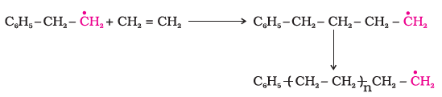
Chain termination step: For termination of the long chain, these free radicals can combine in different ways to form polythene. One mode of termination of chain is shown as under:
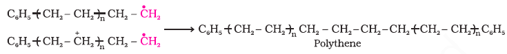
The addition polymers formed by the polymerisation of a single monomeric species are known as homopolymers, for example polythene discussed above is a homopolymer.
The polymers made by addition polymerisation from two different monomers are termed as copolymers. Buna-S, which is formed by polymerisation of buta–1, 3–diene and styrene is an example of copolymer formed by addition polymerisation.
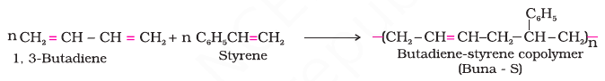
Some Important Addition Polymers:
(a) Polythene:
Polythenes are linear or slightly branched long chain molecules.
These are capable of repeatedly softening on heating and
hardening on cooling and are thus thermoplastic polymers.
There are two types of polythene as given below:
(i) Low density polythene: It is obtained by the polymerisation
of ethene under high pressure of 1000 to 2000
atmospheres at a temperature of 350 K to 570 K in the
presence of traces of dioxygen or a peroxide initiator
(catalyst). The low density polythene (LDP) is obtained
through the free radical addition and H-atom abstraction.
It has highly branched structure. These polymers have
straight chain structure with some branches as
shown below.
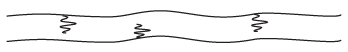
Low density polythene is chemically inert and tough but
flexible and a poor conductor of electricity. Hence, it is used
in the insulation of electricity carrying wires and manufacture
of squeeze bottles, toys and flexible pipes.
(ii) High density polythene: It is formed when addition
polymerisation of ethene takes place in a hydrocarbon solvent
in the presence of a catalyst such as triethylaluminium and
titanium tetrachloride (Ziegler-Natta catalyst) at a temperature
of 333 K to 343 K and under a pressure of 6-7 atmospheres.
High density polythene (HDP) thus produced, consists of linear
molecules as shown below and has a high density due to
close packing. Such polymers are also called linear polymers.
High density polymers are also chemically inert and more
tough and hard. It is used for manufacturing buckets,
dustbins, bottles, pipes, etc.
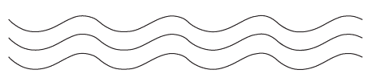
(b)Polytetrafluoroethene (Teflon):
Teflon is manufactured by heating tetrafluoroethene with a free
radical or persulphate catalyst at high pressures. It is chemically
inert and resistant to attack by corrosive reagents. It is used in
making oil seals and gaskets and also used for non – stick surface
coated utensils.
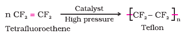
(c) Polyacrylonitrile:
The addition polymerisation of acrylonitrile in presence of a
peroxide catalyst leads to the formation of polyacrylonitrile.
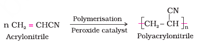
Polyacrylonitrile is used as a substitute for wool in making
commercial fibres as orlon or acrilan.
Condensation Polymerisation or Step Growth Polymerisation:
This type of polymerisation generally involves a repetitive
condensation reaction between two bi-functional or trifunctional
mono-meric units. These polycondensation reactions may result in
the loss of some simple molecules as water, alcohol, hydrogen
chloride, etc., and lead to the formation of high molecular mass
condensation polymers.
In these reactions, the product of each step is again a bi-functional
species and the sequence of condensation goes on. Since, each step
produces a distinct functionalised species and is independent of each
other, this process is also called as step growth polymerisation.
The formation of terylene or dacron by the interaction of ethylene
glycol and terephthalic acid is an example of this type
of polymerisation.
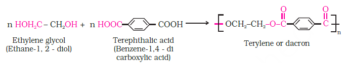
Some important Condensation Polymers:
(a) Polyamides:
These polymers possessing amide linkages are important
examples of synthetic fibres and are termed as nylons. The
general method of preparation consists of the condensation
polymerisation of diamines with dicarboxylic acids or
condensation of amino acids or their lactams.
Nylons
(i) Nylon 6,6: It is prepared by the condensation
polymerisation of hexamethylenediamine with adipic acid
under high pressure and at high temperature.
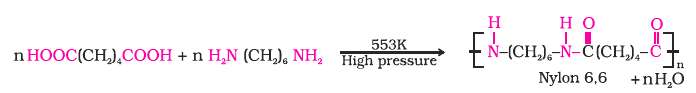
Nylon 6, 6 is fibre forming solid. It possess high tensile
strength. This characteristic can be attributed to the strong
intermolecular forces like hydrogen bonding. These strong
forces also lead to close packing of chains and thus impart
crystalline nature.
Nylon 6, 6 is used in making sheets, bristles for brushes
and in textile industry.
Nylon 6:
It is obtained by heating caprolactum with water
at a high temperature.
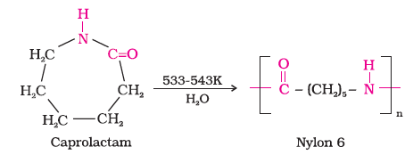
Nylon 6 is used for the manufacture of tyre cords, fabrics
and ropes.
(b) Polyesters
These are the polycondensation products of dicarboxylic
acids and diols. Dacron or terylene is the best known example
of polyesters. It is manufactured by heating a mixture of ethylene
glycol and terephthalic acid at 420 to 460 K in the presence of
zinc acetate-antimony trioxide catalyst as per the reaction given
earlier. Dacron fibre (terylene) is crease resistant and is used
in blending with cotton and wool fibres and also as glass
reinforcing materials in safety helmets, etc.
(c) Phenol – formaldehyde polymer (Bakelite and related
polymers):
Phenol – formaldehyde polymers are the oldest synthetic
polymers. These are obtained by the condensation reaction of
phenol with formaldehyde in the presence of either an acid or a
base catalyst. The reaction starts with the initial formation of
o-and/or p-hydroxymethylphenol derivatives, which further
react with phenol to form compounds having rings joined to
each other through–CH2 groups. The initial product could be a
linear product – Novolac used in paints.
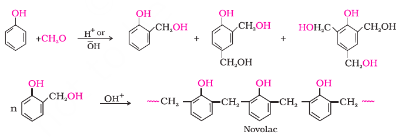
Novolac on heating with formaldehyde undergoes cross linking
to form an infusible solid mass called bakelite. It is
thermosetting polymer which cannot be reused or remoulded.
Thus, bakelite is formed by cross linking of linear chains of the
polymer novolac. Bakelite is used for making combs, phonograph
records, electrical switches and handles of various utensils.
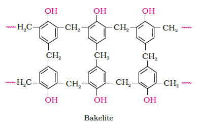
(d) Melamine — formaldehyde polymer:
Melamine formaldehyde polymer is formed by the condensation
polymerisation of melamine and formaldehyde.
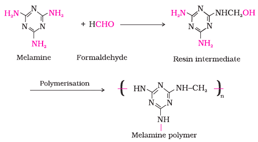
It is used in the manufacture of unbreakable crockery.
Copolymerisation:
Copolymerisation is a polymerisation reaction in which a mixture of
more than one monomeric species is allowed to polymerise and form
a copolymer. The copolymer can be made not only by chain growth
polymerisation but by step growth polymerisation also. It contains
multiple units of each monomer used in the same polymeric chain.
For example, a mixture of buta–1, 3–diene and styrene can form
a copolymer.
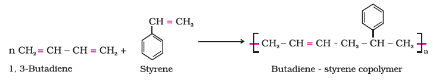
Copolymers have properties quite different from homopolymers.
For example, butadiene - styrene copolymer is quite tough and is
a good substitute for natural rubber. It is used for the manufacture
of autotyres, floortiles, footwear components, cable insulation,
etc.
Rubber:
1. Natural Rubber:
Rubber is a natural polymer and possesses elastic
properties. It is also termed as elastomeric polymer. In
elastomeric polymers, the polymer chains are held together by
the weak intermolecular forces. These weak binding forces permit
the polymer to be stretched. A few ‘crosslinks’ are introduced
in between the chains, which help the polymer to retract to its
original position after the force is released.
Rubber has a variety of uses. It is manufactured from rubber
latex which is a colloidal dispersion of rubber in water. This
latex is obtained from the rubber tree which is found in India,
Srilanka, Indonesia, Malaysia and South America.
Natural rubber may be considered as a linear polymer of
isoprene (2-methyl-1, 3-butadiene) and is also called as cis - 1,
4 - polyisoprene.
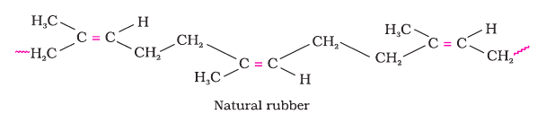
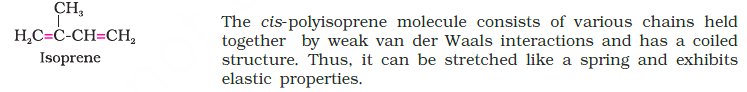
Vulcanisation of rubber: Natural rubber becomes soft at
high temperature (>335 K) and brittle at low temperatures (<283K)
and shows high water absorption capacity. It is soluble in nonpolar
solvents and is non-resistant to attack by oxidising agents.
To improve upon these physical properties, a process of
vulcanisation is carried out. This process consists of heating a
mixture of raw rubber with sulphur and an appropriate additive
at a temperature range between 373 K to 415 K. On vulcanisation,
sulphur forms cross links at the reactive sites of double bonds and
thus the rubber gets stiffened.
In the manufacture of tyre rubber, 5% of sulphur is used as a
crosslinking agent. The probable structures of vulcanised rubber
molecules are depicted below:
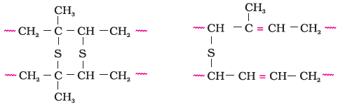
2. Synthetic rubbers:
Synthetic rubber is any vulcanisable rubber like polymer, which
is capable of getting stretched to twice its length. However, it
returns to its original shape and size as soon as the external
stretching force is released. Thus, synthetic rubbers are either
homopolymers of 1, 3 - butadiene derivatives or copolymers
of 1, 3 - butadiene or its derivatives with another unsaturated
monomer.
Preparation of Synthetic Rubbers
1. Neoprene:
Neoprene or polychloroprene is formed by the free radical
polymerisation of chloroprene.
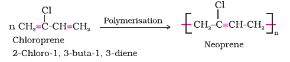
It has superior resistance to vegetable and mineral oils. It is
used for manufacturing conveyor belts, gaskets and hoses.
2. Buna – N:
You have already studied about Buna-S. Buna–N is obtained by
the copolymerisation of 1, 3 – buta–1, 3–diene
and acrylonitrile in the presence of a peroxide catalyst.
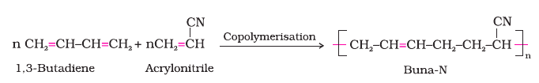
It is resistant to the action of petrol, lubricating oil and organic solvents.
It is used in making oil seals, tank lining, etc.
Molecular Mass of Polymers:
Polymer properties are closely related to their molecular mass, size
and structure. The growth of the polymer chain during their
synthesis is dependent upon the availability of the monomers in
the reaction mixture. Thus, the polymer sample contains chains
of varying lengths and hence its molecular mass is always expressed
as an average. The molecular mass of polymers can be determined
by chemical and physical methods.
Biodegradable Polymers:
A large number of polymers are quite resistant to the environmental
degradation processes and are thus responsible for the
accumulation of polymeric solid waste materials. These solid wastes
cause acute environmental problems and remain undegraded for
quite a long time. In view of the general awareness and concern
for the problems created by the polymeric solid wastes, certain
new biodegradable synthetic polymers have been designed and
developed. These polymers contain functional groups similar to
the functional groups present in biopolymers.
Aliphatic polyesters are one of the important classes of
biodegradable polymers. Some important examples are given below:
1. Poly b-hydroxybutyrate – co-b-hydroxy valerate (PHBV):
It is obtained by the copolymerisation of 3-hydroxybutanoic
acid and 3 - hydroxypentanoic acid. PHBV is used in speciality
packaging, orthopaedic devices and in controlled release
of drugs. PHBV undergoes bacterial degradation in the
environment.
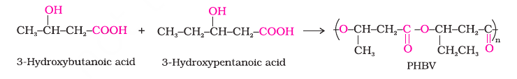
2. Nylon 2–nylon 6:
It is an alternating polyamide copolymer of glycine (H2N–CH2–2
COOH) and amino caproic acid [H2N (CH2)5 COOH] and is
biodegradable.
Polymers of Commercial importance:
Besides, the polymers already discussed, some other
commercially important polymers along with their structures and
uses are given below in the Table.
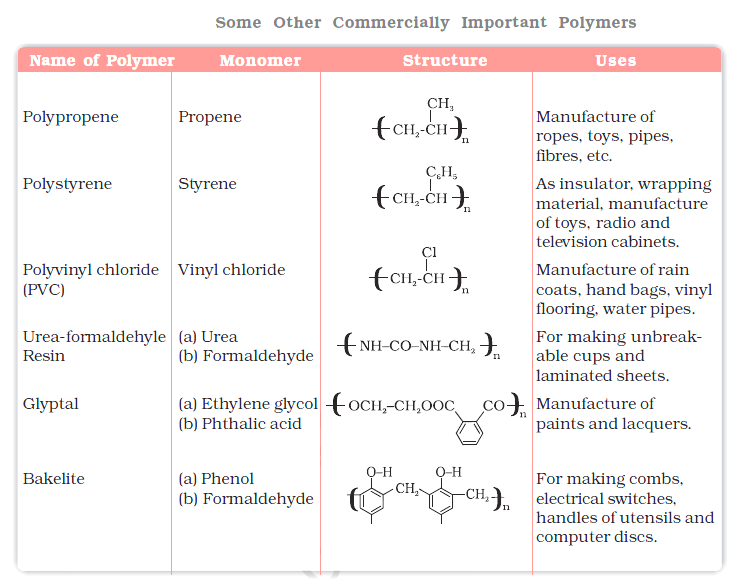